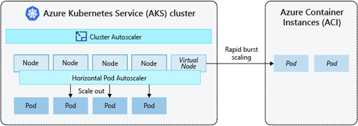

You are designing an Azure solution.
The network traffic for the solution must be securely distributed by providing the following features:
✑ HTTPS protocol
✑ Round robin routing
✑ SSL offloading
You need to recommend a load balancing option.
What should you recommend?
Your company, named Contoso, Ltd, implements several Azure logic apps that have HTTP triggers. The logic apps provide access to an on-premises web service.
Contoso establishes a partnership with another company named Fabrikam, Inc.
Fabrikam does not have an existing Azure Active Directory (Azure AD) tenant and uses third-party OAuth 2.0 identity management to authenticate its users.
Developers at Fabrikam plan to use a subset of the logic apps to build applications that will integrate with the on-premises web service of Contoso.
You need to design a solution to provide the Fabrikam developers with access to the logic apps. The solution must meet the following requirements:
✑ Requests to the logic apps from the developers must be limited to lower rates than the requests from the users at Contoso.
✑ The developers must be able to rely on their existing OAuth 2.0 provider to gain access to the logic apps.
✑ The solution must NOT require changes to the logic apps.
✑ The solution must NOT use Azure AD guest accounts.
What should you include in the solution?
Correct Answer:
C
API Management helps organizations publish APIs to external, partner, and internal developers to unlock the potential of their data and services.
You can secure API Management using the OAuth 2.0 client credentials flow.
Incorrect Answers:
A: Azure Active Directory B2B uses guest users.
B: Azure Front Door is an Application Delivery Network (ADN) as a service, offering various layer 7 load-balancing capabilities for your applications.
Azure Front Door supports HTTP, HTTPS and HTTP/2.
Applications can be authorized through OAuth 2.0.
D: Application Proxy is a feature of Azure AD that enables users to access on-premises web applications from a remote client. Application Proxy includes both the
Application Proxy service which runs in the cloud, and the Application Proxy connector which runs on an on-premises server.
Application Proxy works with:
✑ Web applications that use Integrated Windows Authentication for authentication
Web applications that use form-based or header-based access
Reference:
https://docs.microsoft.com/en-us/azure/api-management/api-management-key-concepts
You have an Azure subscription that contains a Windows Virtual Desktop tenant.
You need to recommend a solution to meet the following requirements:
✑ Start and stop Windows Virtual Desktop session hosts based on business hours.
✑ Scale out Windows Virtual Desktop session hosts when required.
✑ Minimize compute costs.
What should you include in the recommendation?
Correct Answer:
C
Reference:
https://www.ciraltos.com/automatically-start-and-stop-wvd-vms-with-azure-automation/ https://wvdlogix.net/windows-virtual-desktop-host-pool-automation-2 https://getnerdio.com/academy/how-to-optimize-windows-virtual-desktop-wvd-azure-costs-with-event-based-autoscaling-and-azure-vm-scale-sets/
You have an Azure subscription.
You need to deploy an Azure Kubernetes Service (AKS) solution that will use Windows Server 2019 nodes. The solution must meet the following requirements:
✑ Minimize the time it takes to provision compute resources during scale-out operations.
✑ Support autoscaling of Windows Server containers.
Which scaling option should you recommend?
Correct Answer:
A
Azure Container Instances (ACI) lets you quickly deploy container instances without additional infrastructure overhead. When you connect with AKS, ACI becomes a secured, logical extension of your AKS cluster. The virtual nodes component, which is based on Virtual Kubelet, is installed in your AKS cluster that presents ACI as a virtual Kubernetes node. Kubernetes can then schedule pods that run as ACI instances through virtual nodes, not as pods on VM nodes directly in your AKS cluster.
Your application requires no modification to use virtual nodes. Deployments can scale across AKS and ACI and with no delay as cluster autoscaler deploys new nodes in your AKS cluster.

Note: AKS clusters can scale in one of two ways:
✑ The cluster autoscaler watches for pods that can't be scheduled on nodes because of resource constraints. The cluster then automatically increases the number of nodes.
✑ The horizontal pod autoscaler uses the Metrics Server in a Kubernetes cluster to monitor the resource demand of pods. If an application needs more resources, the number of pods is automatically increased to meet the demand.
Incorrect Answers:
B: To rapidly scale your AKS cluster, you can integrate with Azure Container Instances (ACI). Kubernetes has built-in components to scale the replica and node count. However, if your application needs to rapidly scale, the horizontal pod autoscaler may schedule more pods than can be provided by the existing compute resources in the node pool. If configured, this scenario would then trigger the cluster autoscaler to deploy additional nodes in the node pool, but it may take a few minutes for those nodes to successfully provision and allow the Kubernetes scheduler to run pods on them.
Reference:
https://docs.microsoft.com/en-us/azure/aks/concepts-scale5